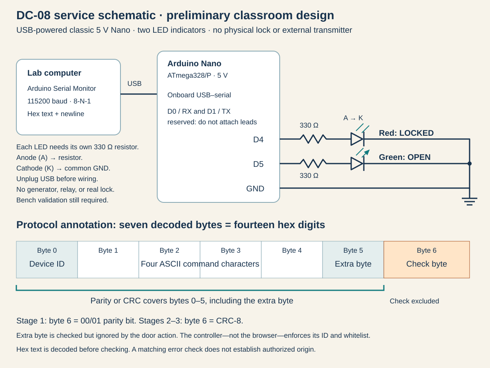

ACCESS SYSTEMS / SERVICE ENGINEERING
DC-08 controller: service sheet
Maintenance interface · wiring & protocol schematic
Revision: C
Supply: USB / 5 V
Interface: 115200 / 8-N-1

01 / Maintenance interface
Use the onboard USB serial interface at 115200 baud, 8-N-1. Transmit one line containing 16 digits, representing exactly eight bytes, then a newline. Spaces and lowercase hex are permitted. CRLF is also supported. Bare command names, 0x prefixes, tabs and other separators are not accepted.
Before initialization, the service address is emitted as hex at 10-second intervals. To initialize the controller, use the INIT command in the correct packet syntax. The command list below identifies the four ASCII characters to place in the command field; construct their hex representation before transmission.
Disconnect USB before changing wiring. Red indicates LOCKED; green indicates OPEN. Each LED has its own 330 Ω series resistor. D0/RX and D1/TX are reserved for the onboard USB serial interface.
02 / Eight-byte packet
| Byte | Field | Definition |
|---|---|---|
| 0 | Device ID | 01–FF for LOCK/OPEN; service ID 00 for INIT/HELP/RSET. |
| 1–4 | Command | Four ASCII command characters. |
| 5–6 | Two extra bytes | Both included in the check. LOCK/OPEN permit arbitrary values; service commands require both bytes to be zero. |
| 7 | Check byte | Computed over bytes 0–6. Check excluded from its own calculation. |
Service commands always use even parity, regardless of the installed patch. Their check byte must be 00 or 01 so the total number of one bits across all eight bytes is even. The serial port setting stays 8-N-1.
03 / Command register
| Command | Address | Action |
|---|---|---|
| INIT | Service ID 00 | Initialize v1.0 and enable the LOCK capture stream. Repeated INIT does not restart an active run. |
| HELP | Service ID 00 | Report initialization, patch and lock status. |
| LOCK | Device ID | Confirm the locked state. A valid LOCK packet does not execute OPEN or advance a patch. |
| OPEN | Device ID | Open when the current patch's checks pass. |
| RSET | Service ID 00 | Return to before INIT at v1.0. |
04 / Patch notes
v1.0: LOCK/OPEN use even parity across bytes 0–6 and the lowest bit of byte 7. Byte 7 must be 00 or 01.
| Patch | Convention | Input reflected | Result reflected | Polynomial | Initial Value | Final Xor Value |
|---|---|---|---|---|---|---|
| v2.0 | CRC-8/SMBUS | No | No | 07 | 00 | 00 |
| v3.0 | CRC-8/MAXIM-DOW | Yes | Yes | 31 | 00 | 00 |
Width: 8 bits. CRC-8 covers bytes 0–6, including both extra bytes but excluding byte 7. Values are hexadecimal. Polynomial uses its normal representation with the implicit x⁸ term omitted; use 31, not its bit-reversed representation, for v3.0.
v3.0 approval rule: A valid CRC must also equal the approved CRC from the current v3.0 LOCK capture. The approval list stores check values, not complete messages. Do not reuse the CRC from a v2.0 capture.
05 / Operating sequence
After INIT, the controller emits its version/device header and current LOCK packet immediately, then every 30 seconds. Successful OPEN commands in v1.0 and v2.0 illuminate green, report the earned token and install the next patch. Installation takes three seconds; wait for “Patched!” and the new capture before transmitting another LOCK/OPEN packet.
An incorrect packet before completion reports “Wrong input detected!”, a reason, and “Rebooting…”. The controller returns to before INIT at v1.0. RSET has the same reset destination. Restart the interface with a newly transmitted INIT packet.
After the final successful OPEN, green remains on and the capture stream stops. HELP reports completion. Only a valid RSET packet, power cycle or hardware reset starts a new run; other input leaves completion intact.